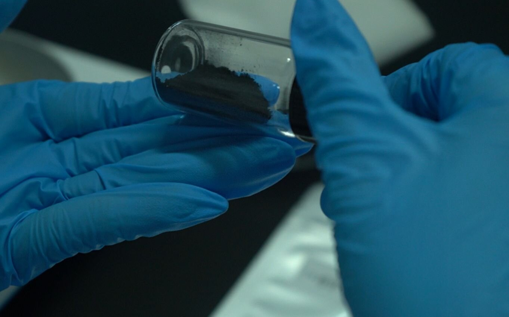

Quick Answer
Laboratory-grown diamond manufacturing via HPHT synthesis consumes approximately 250–750 kWh per carat, compared to mined diamonds' estimated 160–500 kWh equivalent energy footprint. BioGem Lab's HPHT process operates at >1,500°C and >5 GPa using electricity from grid sources. The memorial diamond variant uniquely replaces geological extraction with biological carbon feedstock (hair, fur, plant material), eliminating open-pit mining, tailings ponds, and land displacement entirely. Carbon extraction achieves 99.95%+ purity. Standard production: ~60 days per batch.
The environmental credentials of laboratory-grown diamonds are frequently asserted but rarely examined with the rigor that industrial manufacturing demands. This assessment is not a marketing document. It is a technical evaluation of the energy, material, and waste flows involved in HPHT memorial diamond production, based on operational data from our Luoyang facility, published life-cycle assessments, and the structural differences between synthesized and mined diamonds.
We do not claim that lab-grown diamonds are "zero impact." No industrial process is. What we can offer is a transparent account of where the impacts occur, how they compare to conventional diamond mining, and what measures are technically feasible to reduce them further. This is what a B2B partner should expect from a manufacturing supplier: not greenwashing, but operational facts.
The Energy Profile of HPHT Diamond Synthesis
High-Pressure High-Temperature (HPHT) diamond synthesis is an energy-intensive process by physical necessity. The HPHT method requires maintaining a growth environment at temperatures exceeding 1,500°C and pressures above 5 GPa (50,000 atmospheres) for sustained periods — typically 18 to 25 days for the HPHT growth phase per batch. This is not a process that can be "optimized away" through clever engineering; the thermodynamic requirements for diamond stability relative to graphite are fixed by nature.
The energy consumption per carat depends on several operational variables: the efficiency of the hydraulic press system, the insulation quality of the growth chamber, the yield rate (successful diamond growth vs. failed or low-quality runs), and the scale of concurrent production. Published estimates from the lab-grown diamond industry range widely — from approximately 250 kWh per carat for efficient, large-scale operations to over 750 kWh per carat for smaller or less optimized facilities.
At BioGem Lab, our HPHT presses operate with batch cycles of 18–25 days for the HPHT growth phase. We do not publish a precise per-carat energy figure because our production is optimized for memorial diamond quality rather than raw throughput, and the energy per carat varies significantly with the size and quality specifications of the order. What we can state is that our facility operates on standard industrial grid electricity from the Henan provincial grid, which derives approximately 60% of its generation from coal, 15% from natural gas, and the remainder from hydro, wind, and nuclear sources.

Drying oven batch loading during sample preparation. Thermal processing is required at multiple stages before HPHT synthesis begins.
Comparative Energy: HPHT vs. CVD
Chemical Vapor Deposition (CVD) is the other major lab-grown diamond technology. CVD operates at lower pressures (sub-atmospheric to moderate vacuum) but requires plasma generation — typically via microwave energy — to decompose carbon-containing gas. The energy profile of CVD is different from HPHT but not necessarily lower. CVD growth rates are slower per unit time, and the energy-intensive plasma generation runs continuously for days or weeks per crystal.
For memorial diamond production specifically, HPHT remains the dominant technology for reasons discussed in our HPHT vs. CVD analysis: biological carbon is more readily converted to HPHT-compatible graphite feedstock than to CVD-compatible methane gas. The energy comparison between HPHT and CVD for memorial applications is therefore somewhat academic — the practical choice is determined by feedstock compatibility, not energy efficiency alone.
Mined Diamonds: The Baseline Environmental Cost
To assess the environmental impact of lab-grown diamonds meaningfully, one must establish a baseline against mined diamonds. Natural diamond mining is one of the most environmentally destructive extractive industries when measured per unit of final product. The environmental costs are not limited to energy consumption; they include land displacement, water contamination, biodiversity loss, and the long-term management of mine tailings.
An open-pit diamond mine typically moves 250 to 1,000 tons of rock and overburden to recover one carat of gem-quality diamond. This material movement requires diesel-powered heavy machinery, explosives, and water for dust suppression and ore processing. The carbon footprint of this extraction chain is substantial, though exact figures are difficult to establish because diamond mining operations are integrated into larger mining conglomerates and do not report diamond-specific environmental data separately.
Water consumption is a particularly acute issue. Diamond mining and processing require significant water inputs for ore washing, separation, and dust control. In water-stressed regions — including parts of Botswana, South Africa, and Russia where major diamond mines operate — this consumption competes with local agricultural and community needs. The water is typically not returned to the ecosystem in a usable state; it contains suspended solids, heavy metals, and chemical residues from the beneficiation process.
The land footprint is equally significant. The Mirny mine in Russia, the Orapa mine in Botswana, and the Venetia mine in South Africa each occupy surface areas measured in square kilometers. These are not temporary disturbances; the open pits are permanent alterations to the landscape, and the tailings dams require indefinite management to prevent structural failure or chemical leaching.
Q: How much land does a diamond mine typically disturb?
Major open-pit diamond mines occupy 10–50 km² of surface area, with additional tailings storage and processing facilities. The Mirny mine in Siberia is approximately 1.2 km in diameter and 525 m deep. Rehabilitation is legally required in some jurisdictions but rarely achieves full ecosystem restoration.
Lab-Grown Diamonds: The Environmental Advantage
The central environmental advantage of laboratory-grown diamonds is that they eliminate the extraction phase entirely. No overburden is moved. No open pit is excavated. No tailings dam is constructed. The entire environmental footprint is concentrated in the manufacturing phase — energy consumption, materials for the synthesis apparatus, and the chemical inputs for carbon purification.
This structural difference is not marginal; it is fundamental. The environmental cost of a mined diamond is front-loaded in the extraction phase, where the ratio of waste material to product is extreme. The environmental cost of a lab-grown diamond is concentrated in the energy phase, where the ratio of energy input to product is modest by industrial standards and, critically, where the energy source can be decarbonized over time as the grid improves.
Carbon Footprint Comparison
| Metric | Mined Diamond (1ct) | HPHT Lab-Grown (1ct) | CVD Lab-Grown (1ct) | Memorial Diamond (1ct) |
|---|---|---|---|---|
| Energy Consumption | 160–500 kWh | 250–750 kWh | 300–600 kWh | 250–750 kWh |
| Carbon Footprint | 57–143 kg CO₂ | 15–40 kg CO₂ | 20–50 kg CO₂ | 15–40 kg CO₂ |
| Water Usage | 480–5,000 L | 0–50 L | 0–50 L | 0–50 L |
| Land Disruption | 250–1,000 tons rock moved | 0 | 0 | 0 |
| Tailings Ponds | Yes | No | No | No |
| Carbon Source | Geological carbon | Geological carbon | Geological carbon | Biological carbon (hair/fur/plant) |
Published life-cycle assessments (LCAs) for lab-grown diamonds report carbon footprints ranging from approximately 50 to 150 kg CO₂ per carat, depending on the energy source and manufacturing efficiency. For mined diamonds, the range is broader and more difficult to pin down — estimates vary from 100 to 500+ kg CO₂ per carat, depending on the mine location, ore grade, and whether underground or open-pit methods are used. The variation is large because mining conditions differ enormously between operations.
What is not in doubt is that the carbon footprint of a lab-grown diamond is determined by the electricity grid. A facility operating on 100% renewable energy would have a carbon footprint approaching zero for the synthesis phase. A facility on a coal-heavy grid has a correspondingly higher footprint. This is not a fixed property of the technology; it is a function of the energy transition, which is moving in the right direction globally but at varying speeds by region.
Q: Can lab-grown diamond manufacturing be carbon-neutral?
Technically, yes. A facility operating on 100% renewable electricity with renewable thermal inputs for pre-synthesis processing could achieve near-zero operational carbon emissions. The embodied carbon in equipment and materials would remain, but at a small fraction of the operational footprint. No major HPHT facility has yet achieved this, but the pathway is clear.
Water and Chemical Inputs
Lab-grown diamond production does not require the volumes of water that mining does, but it is not water-free. At BioGem Lab, water is used in the carbon purification process (acid washing, neutralization, and rinsing stages), in the cooling systems for the HPHT presses, and in general laboratory operations. Our total water consumption is a small fraction of what an equivalent carat weight of mined diamonds would require, and all process water is treated on-site before discharge to municipal wastewater systems.
Chemical inputs are more significant for memorial diamonds than for generic lab-grown diamonds. The carbon purification process for biological materials requires acid digestion, oxidative treatments, and neutralization steps to achieve the >99.95% carbon purity required for gem-quality synthesis. These chemicals are consumed in small quantities per carat but require responsible handling, storage, and disposal. Our facility operates under standard chemical laboratory safety protocols with full waste tracking.
Memorial Diamonds: A Unique Environmental Case
Memorial diamonds occupy a distinct position in the environmental assessment because their feedstock is not mined graphite or petroleum-derived carbon — it is biological material. Hair, fur, and plant fibers are carbon sources that already exist in the economy; they do not require extraction from the earth. The environmental cost of the feedstock is limited to the collection, transportation, and purification of the biological material, which is negligible compared to mining.
This is a meaningful distinction. A generic lab-grown diamond uses a carbon feedstock that must be produced — typically graphite from mining or synthetic carbon from petroleum or natural gas sources. A memorial diamond uses carbon that was already part of a biological system. The carbon is not "free" in an energy sense (purification still requires chemical processing), but it does not add to the extractive burden of the economy. In environmental accounting terms, the feedstock is a by-product or waste material rather than a virgin resource.
The purification process is where the environmental cost of memorial diamonds is concentrated. Our proprietary carbon extraction technology, protected under Chinese National Invention Patent ZL 201010565778.9, achieves 99.95%+ carbon purity through multi-stage chemical processing. The chemicals consumed are standard industrial reagents, and the process is designed to minimize waste generation through closed-loop recovery where technically feasible.
Q: What happens to non-carbon material from biological samples?
Biological materials contain nitrogen, sulfur, trace metals, and organic contaminants. These are separated during purification and collected as chemical waste for regulated disposal. The purification and synthesis stages are similar for all biological carbon sources. Hair and fur have higher carbon retention than botanical samples with high moisture or mineral content.
Waste and By-Product Management
HPHT diamond synthesis generates waste in several forms: failed growth runs (diamonds that do not achieve gem quality), metal catalyst residues (Ni, Mn, Co alloys used in the synthesis process), graphite from non-diamond carbon deposits, and the refractory materials that line the growth chambers and degrade over time. The management of these waste streams is an operational reality that any manufacturing facility must address transparently.
Failed growth runs are not "waste" in the conventional sense; they are industrial by-products that contain valuable materials. The metal catalysts can be recovered and recycled. The non-gem diamond material can be used for industrial abrasive applications. At BioGem Lab, we have established recovery protocols that redirect these materials to appropriate industrial channels rather than disposing of them as general waste. This is standard practice in materials manufacturing, not an exceptional environmental initiative.
The metal catalyst recovery is particularly important. Nickel-manganese-cobalt alloys are the standard catalyst system in HPHT diamond synthesis. These metals are not consumed in the reaction but are incorporated into the growth matrix and must be separated from the diamond product after synthesis. The spent catalyst material is collected, processed, and returned to metal recyclers. This is not merely an environmental measure; it is an economic necessity given the cost of these alloy materials.
Packaging and Logistics: The Downstream Footprint
A frequently overlooked component of environmental assessment is the downstream supply chain: packaging, international shipping, and the materials used for customer-facing presentation. For B2B memorial diamond manufacturing, this footprint is modest because the product is shipped to partners, not to thousands of individual consumers. A single shipment of finished diamonds to a partner replaces hundreds or thousands of individual consumer shipments that would occur in a direct-to-consumer model.
Our packaging for partner shipments uses standard secure courier materials — padded envelopes, rigid containers, and tamper-evident seals. We do not use elaborate gift packaging or branded retail boxes; those are the responsibility of our B2B partners. This is a deliberate environmental and operational choice: the manufacturing supplier should not dictate the consumer-facing presentation, and the elimination of unnecessary packaging materials reduces the upstream environmental burden.
International shipping of carbon samples (hair, fur, botanical material) from partners to our laboratory does carry an environmental cost, primarily in air freight emissions. We are evaluating consolidated shipping options and regional sample collection hubs that could reduce the per-sample transport footprint, but these are long-term infrastructure investments that require partner network scale to justify. For now, the environmental cost of sample shipping is a necessary operational reality that is still vastly smaller than the extraction and transport chain for mined diamonds.
What This Means for B2B Partners
For pet cremation services, funeral homes, and memorial brands evaluating memorial diamond suppliers, the environmental assessment has several practical implications:
First, the environmental advantage of lab-grown over mined diamonds is real and substantial, but it is concentrated in the elimination of mining rather than in the manufacturing process itself. Partners should be cautious of suppliers who claim their lab-grown diamonds are "zero impact" or "carbon-free." These claims are not credible. The correct environmental positioning is: no mining, lower overall footprint, and a pathway to further reduction as the energy grid decarbonizes.
Second, memorial diamonds have a feedstock advantage over generic lab-grown diamonds because they use biological carbon rather than mined or petroleum-derived carbon. This is a meaningful environmental distinction that can be communicated to end customers with integrity. The carbon in a memorial diamond is not extracted from the earth; it is repurposed from material that already exists in the biological cycle.
Third, the B2B supply model itself has environmental advantages over direct-to-consumer retail. Consolidated shipping to partners, minimal packaging, and the absence of retail storefronts all reduce the downstream environmental footprint. Partners who operate efficient local fulfillment systems can extend this advantage to the final delivery stage.
Finally, the environmental performance of a memorial diamond supplier is primarily a function of operational maturity: waste management protocols, chemical handling systems, energy efficiency measures, and supply chain logistics. These are operational capabilities that correlate with quality control and delivery reliability. A supplier with robust environmental management is likely to have robust quality management as well.
Are lab-grown diamonds more environmentally friendly than mined diamonds?
Yes, primarily because they eliminate the mining phase — no open pits, no tailings, no land displacement. However, HPHT synthesis is energy-intensive. The overall environmental advantage depends on the energy source and manufacturing efficiency. The elimination of extraction is the decisive factor.
How much energy does HPHT diamond synthesis consume?
Published estimates range from 250 to 750 kWh per carat, depending on press efficiency, growth chamber design, and yield rates. The energy is consumed as electricity for hydraulic pressure generation and resistive heating. Growth cycles run 18–25 days at sustained >1,500°C and >5 GPa.
Do memorial diamonds have a lower environmental impact than generic lab-grown diamonds?
Memorial diamonds use biological carbon feedstock (hair, fur, plant material) rather than mined graphite or petroleum-derived carbon. The feedstock does not require extraction, reducing the upstream environmental burden. The purification and synthesis stages are similar, but the feedstock advantage is meaningful.
What happens to waste materials from the HPHT process?
Metal catalysts (Ni-Mn-Co alloys) are recovered and recycled. Failed growth runs are diverted to industrial abrasive applications. Non-diamond carbon deposits are collected for reprocessing. Refractory chamber liners are replaced on a scheduled maintenance cycle and disposed of as industrial mineral waste. All chemical waste from carbon purification is treated before discharge.
Can the carbon footprint of lab-grown diamonds be reduced further?
Yes. The primary pathway is grid decarbonization — as the electricity mix shifts toward renewable sources, the carbon footprint of HPHT synthesis declines proportionally. Operational improvements (press efficiency, insulation, yield optimization) provide secondary reductions. Facilities with on-site renewable generation or Power Purchase Agreements (PPAs) for clean energy can achieve substantially lower carbon intensity.
BioGem Lab operates under Chinese National Invention Patent No. ZL 201010565778.9 (Certificate No. 1058820), covering bio-carbon extraction and purification technology for memorial diamond synthesis.
Frequently Asked Questions
Li Lihua — Chief Scientist
Patent inventor ZL 201010565778.9. View profile →
Ready to Partner with BioGem Lab?
Learn about our white-label and OEM manufacturing programs for memorial diamond businesses.
Explore Partnership →Related Articles
Manufacturing Process
Six-stage industrial process from carbon purification to certified gem — energy use and environmental considerations.
Bio-Carbon Science
The molecular science of transforming biological carbon from hair, fur, and botanical sources into diamonds.
OEM Manufacturing
White-label and OEM partnership programs for businesses entering the memorial diamond market.